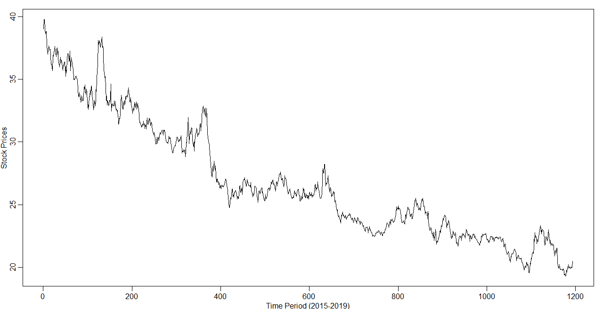
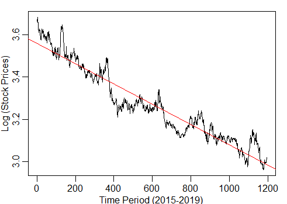
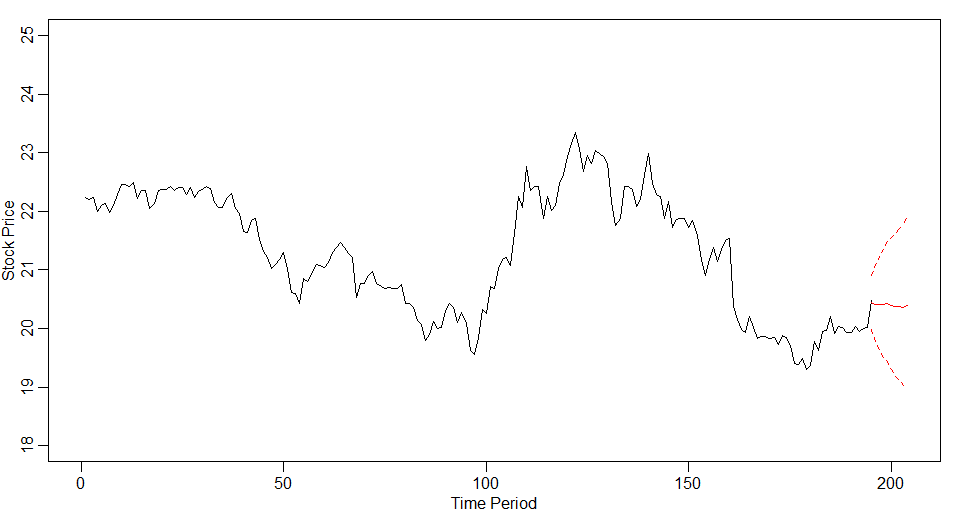

When it comes to financial planning - one of the questions that every investor tries to find an answer to is to be able to understand the direction of the movement of the stock prices. The uncertainty in the movement of the prices of a company's stock can significantly impact the future of the company and it's investors. With the help of advanced data modeling and time series analysis tools available today, one can make an informed decision when it comes to planning by estimating outcomes like what stock to buy or whether stocks will be positive or negative. Let's try and see how these tools can be applied to real world data with the help of an example.
For explaining how time series analysis help in stock market forecasting, we will be using the real asset price data from a fictional company: Mediocre Social Network Apps Incorporated (MSN Apps). As per the the company's investors, MSN Apps has been struggling to maintain the value of its stock price for a few years. The investor are hoping that things might turn around in the near future, but they also want to be realistic with themselves as to take further decisions regarding their business. We have the stock price for MSN Apps available from the beginning of 2015 through the end of September 2019. We will be applying time series tools to forecast the stock price for the first ten trading days of October 2019 to understand what the fourth quarter might hold for MSN Apps this year. First of all, let's begin by having an understanding the movement of it's stock price for the last few years:  Few observations from the stock movement:
Intuitively, when we make decisions about the future of a company's stock prices, we rely our judgement on it's previous values. That's the same reasoning that goes behind the time series analysis. When forecasting the state of the stock for the future, we try and use the information from its previous values. This information broadly comprises of three things:
These are the main 3 components that needs to be learned (or modeled in terms of fancy language) from the data to be able to forecast the future values.
As observed in the stock price movement for the MSN Apps, there is a decreasing downward trend which can be captured with the help of a downward linear fit applied to the data after doing a simple mathematical transformation to handle the highly variable fluctuations:
After understanding the trend, the further analysis requires to capture the seasonality and the noise in the data. All of this is captured in the form of a mathematical equation, which we refer to as the Model (in Machine Learning and Data Analysis world today). Fitting a perfect time series model to your data is like an art work. You have to go through multiple iterations to come up with the model that best fits your data. However, in theory, there are some guidelines that direct you towards choosing the correct parameters for your model.
Without going deep into the technical details of those guidelines,the model that we finally chose for this data utilizes log transformation of the data to stabilize variance, captures the linear trend, handles a 5-trading day seasonality (about a business week). As we evaluated and compared this model to different other models we tried, we found that this was one of the best performing models in terms of predicting the actual stock price with the lowest error on average.
Finally, after learning the behavior of the stock prices and capturing it in the form of a mathematical equation (a.k.a model) - we can use the magical power of this model to forecast the future values for the stock price. Based on the model we learned on the MSN Apps data, the values for the 10 future days are as follows:
The red line near the end of the graph represents the estimated value of the stock price for MSN Apps for the coming 10 days. The dotted lines around the predicted values represents the interval of confidence of our estimation. In other words, the interval gives an indication of how confident our model is in its prediction and the spectrum of variation that can be expected in the estimated value from the model.
Based on the analysis we conducted, unfortunately, we don't see a good news coming up in the near future for MSN App's investors. The future doesn't seem as bright as Mediocre Social Network Apps is currently hoping for. The start of the fourth quarter doesn't seem to be an end of the struggling era for the company. Model predicts that the decreasing trend in the stock prices of Mediocre Social Network Apps Incorporated would be continued and thus the investors shouldn't be cautious in making future decisions.